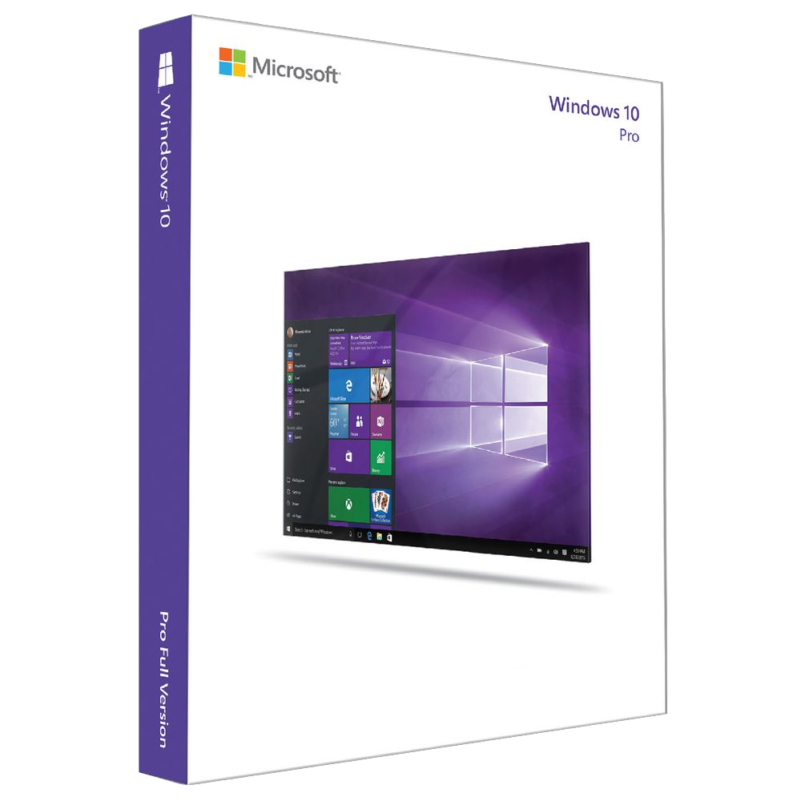
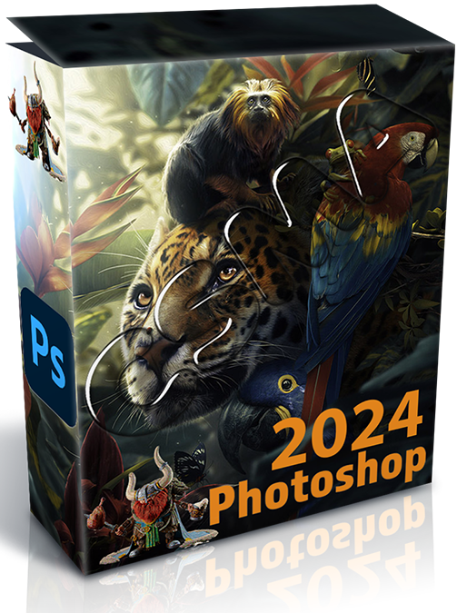
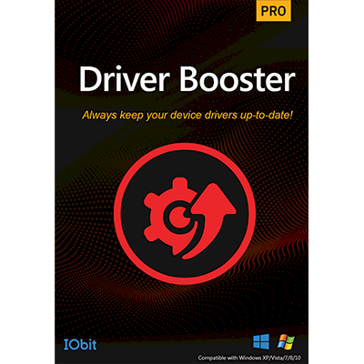

ISO Windows 10
RequesitosAo clicar neste link vocé será redirecionado para uma nova guia que ira conter o arquivo para download. |

Ativador de Windows e OfficeFunção + Dicas:
Ao clicar neste link vocé será redirecionado para uma nova guia que ira conter o arquivo para download. |
||

Adobe Photoshop 2024Requesitos
Ao clicar neste link vocé será redirecionado para uma nova guia que ira conter o arquivo para download. |

Driver booster (Portable)Requesitos
Ao clicar neste link vocé será redirecionado para uma nova guia que ira conter o arquivo para download. |
||
O que é o LINKS Repository?A grande inicial ideia do Links Repository, e de um site que contém diversos links que irão te redirecionar para links externos de downloads que não são nossos, mas que são de extrema confiança, vocé poderá baixar oque vocé deseja sem medo. Nossa missãoNo LINKS Repository, pretendemos simplificar a localização e o acesso ao software necessário. Sem o usuario ter aquela "famosa" preocupação de estar sendo redirecionado para links de contem virus, e um site que buscamos cada vez mais deixar a navegação do usuario simplificada e segura. Sites que contribuiram para os links.
|
|||